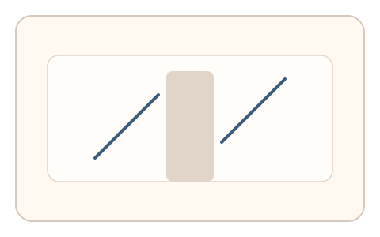
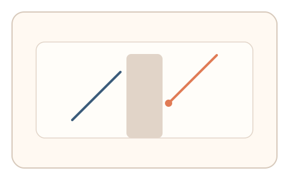
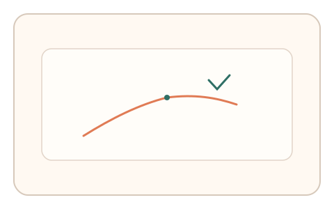

#55
视觉思考范式：扫描/错觉/全局-局部
已扩展
直线错位校准
断裂斜线被遮挡，用户拖拽对齐两段，利用错位偏移与微调步数验证 Poggendorff 错觉特征。
概念原文
断开的斜线被干扰形状遮挡，用户拖拽使两段“看起来对齐”；记录对齐偏移量与微调步数。
使用 Poggendorff 类错觉的稳定偏差作为验证信号。
研究背景
Poggendorff 错觉会使被遮挡的斜线段在视觉上产生系统性错位。通过测量对齐偏移量与微调行为，可形成稳定的知觉偏差特征。
核心机制
- 展示被遮挡的断裂斜线与干扰形状。
- 用户拖拽使两段线看起来对齐。
- 记录对齐偏移量与微调步数。
- 分析偏移方向与稳定性。
用户流程
- 步骤 1：用户看到被遮挡的断裂斜线。
- 步骤 2：用户拖拽调整对齐位置。
- 步骤 3：系统记录偏移并判定。
判定信号
对齐偏移方向与幅度
错觉引发的偏移具有稳定方向。
微调步数与回撤节奏
真实校准通常伴随多次微调。
判定逻辑
评估偏移量是否落在错觉范围，并结合微调节奏；无偏移或一次到位判异常。
对抗面
- 脚本直接计算几何对齐
- 重放真实用户的拖拽轨迹
防御与缓解
- 随机化遮挡形状与线段角度
- 加入轻微噪声与位置扰动
- 叠加微时序与轨迹抖动进行多信号判定
可达性与风险
提供键盘微调或替代任务模式，避免对精细操作用户造成负担。
- 个体差异导致偏移量波动
- 触控设备精度影响微调特征
可视化状态

状态 1：错位线段
断裂斜线被遮挡形成错位感。

状态 2：对齐拖拽
用户拖拽调整对齐位置。

状态 3：偏移判定
分析偏移量与微调步数。
参考资料
Poggendorff illusion
说明断裂线段错位的经典错觉。
Illusion
说明视觉错觉与系统性偏差。